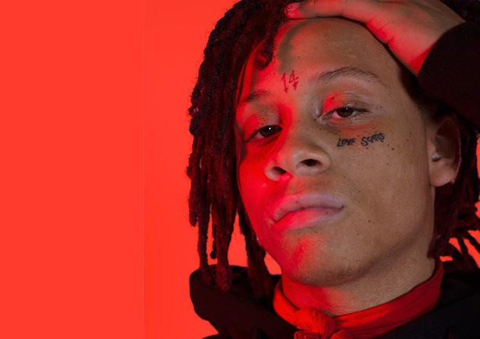

Why New Rap is Better.

New rap is better because there are many genres in the genre rap itself. Sad rap can help others get through things which there was not much of in old school. New rap can be sad, trap, calm, poetic, gang, hype, Many different types for every person. I believe it as well is better because people now make a way higher net worth in a short amount of time. The choices of people is more wide range. Of course there are bad rappers but rappers like kendrick, J Cole, YBN Cordae, anjd so many others are very lyrical and political.